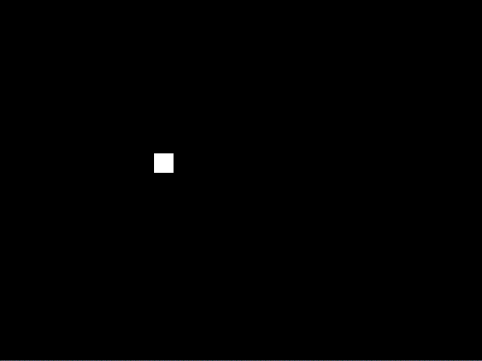
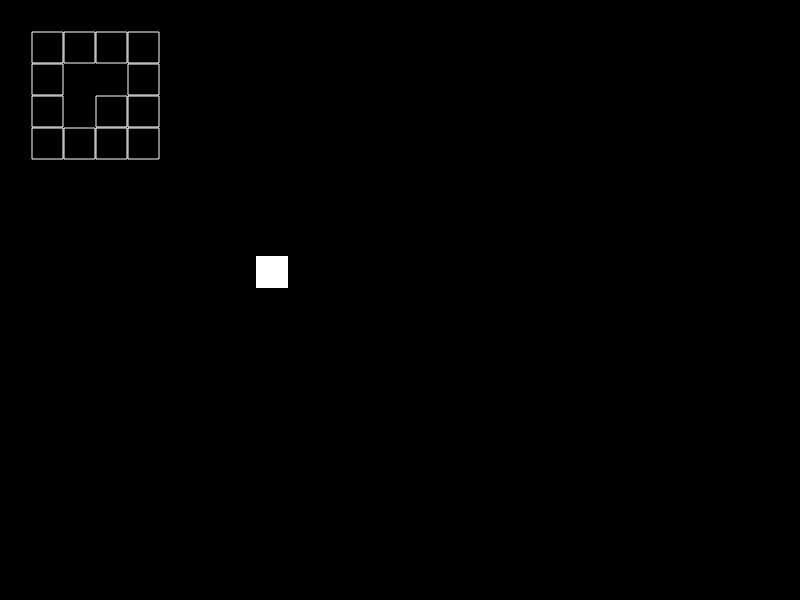
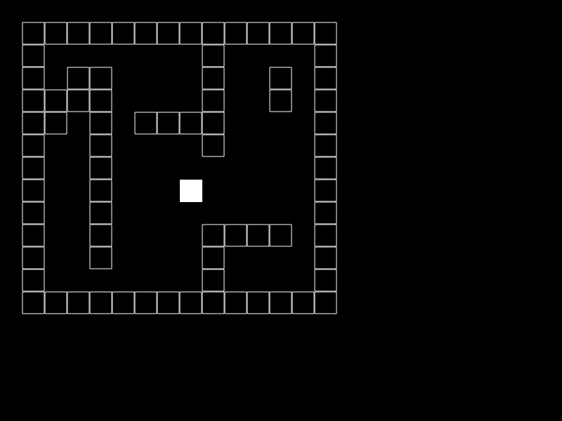

Tutorial:Gridlocked Player
In this tutorial, we will create a VERY basic game wherein you can move a "player" around the screen in fixed increments, but the player graphic moves in smaller increments. This could be useful if you are creating a game that is tile-based, and want your player to stay aligned to the grid, but don't want them to appear to teleport around.
Starting Code
To start with, we need to create a player. The player will have several aspects before we're done, so we're going to make the player variable a table inside of love.load().
function love.load() player = {} end
Next we'll need to see what we're doing. We can render the player as a rectangle using love.graphics.rectangle() in love.draw().
function love.draw() love.graphics.rectangle("fill", 0, 0, 32, 32) end
Let's fill in the player table a little so that the player has a position. Note that we're using the shorthand way of putting variables into a table: just define them inside the curly brackets, using commas to separate them. (We also need to change the parameters in love.graphics.rectangle to use these new values.)
function love.load() player = { x = 256, y = 256 } end function love.draw() love.graphics.rectangle("fill", player.x, player.y, 32, 32) end

Now that the player has position, let's add in some controls using love.keypressed(). All we do is check to see if the key matches, and change the value in the player table.
function love.keypressed(key) if key == "down" then player.y = player.y + 32 end end
So we now have a little square that can teleport down by one grid unit (32 pixels in our case, the same length that we made our player).
Expansion
We can expand this to more keys using elseif. Notice that everything is still in units of 32, a common tile size that plays nice with PO2_Syndrome.
function love.keypressed(key) if key == "up" then player.y = player.y - 32 elseif key == "down" then player.y = player.y + 32 elseif key == "left" then player.x = player.x - 32 elseif key == "right" then player.x = player.x + 32 end end
So we now have a happy little square that can jump around the screen as fast as you can hit the keyboard. Now let's add in the smooth transitions. To do this, we're going to need to shift up the variables in the player table. Don't forget that this will affect all references to the player table.
There are two things that we will now need. One, we need actual XY coordinates as opposed to the gridlocked coordinates that will now serve as destination coordinates. Two, we need to update the actual coordinates in love.update() to move towards the destination coordinates. We can do that with a simple math problem:
actual_x = actual_x - (actual_x - destination_x)
Or, in real Lua this time:
function love.load() player = { grid_x = 256, grid_y = 256, act_x = 200, act_y = 200 } end function love.update(dt) player.act_y = player.act_y - (player.act_y - player.grid_y) player.act_x = player.act_x - (player.act_x - player.grid_x) end function love.draw() love.graphics.rectangle("fill", player.act_x, player.act_y, 32, 32) end function love.keypressed(key) if key == "up" then player.grid_y = player.grid_y - 32 elseif key == "down" then player.grid_y = player.grid_y + 32 elseif key == "left" then player.grid_x = player.grid_x - 32 elseif key == "right" then player.grid_x = player.grid_x + 32 end end
As you probably noticed, you probably can't see any difference. We need to use love.update's dt parameter to control speed, by multiplying the difference of the positions by dt:
function love.update(dt) player.act_y = player.act_y - ((player.act_y - player.grid_y) * dt) player.act_x = player.act_x - ((player.act_x - player.grid_x) * dt) end
Still not quite right though. Now the player is unbearably slow (but at least he's consistent from computer to computer!). Let's give the player a speed attribute to control how fast he moves, by multiplying dt by the speed:
function love.load() player = { grid_x = 256, grid_y = 256, act_x = 200, act_y = 200, speed = 10 } end function love.update(dt) player.act_y = player.act_y - ((player.act_y - player.grid_y) * player.speed * dt) player.act_x = player.act_x - ((player.act_x - player.grid_x) * player.speed * dt) end
Putting it all together
Here is the full code:
function love.load() player = { grid_x = 256, grid_y = 256, act_x = 200, act_y = 200, speed = 10 } end function love.update(dt) player.act_y = player.act_y - ((player.act_y - player.grid_y) * player.speed * dt) player.act_x = player.act_x - ((player.act_x - player.grid_x) * player.speed * dt) end function love.draw() love.graphics.rectangle("fill", player.act_x, player.act_y, 32, 32) end function love.keypressed(key) if key == "up" then player.grid_y = player.grid_y - 32 elseif key == "down" then player.grid_y = player.grid_y + 32 elseif key == "left" then player.grid_x = player.grid_x - 32 elseif key == "right" then player.grid_x = player.grid_x + 32 end end
Adding collision
Now let's add some world detail. To start with, we need to create a table of values that will dictate whether we can walk onto a grid or not.
function love.load() map = { { 1, 1, 1, 1 }, { 1, 0, 0, 1 }, { 1, 0, 1, 1 }, { 1, 1, 1, 1 } } end
This map table holds four subtables, each of which holds four values. Each subtable is a horizontal row in the map, with each value representing a single tile in that row. We used 1s and 0s because they're easy to type.
Now let's draw these values to the screen. Since we only have two types, we can get away with just drawing one of the types... let's say the 1s. We loop through the subtables by using a simple for loop, and then loop through the values inside each subtable.
function love.draw() for y=1, #map do for x=1, #map[y] do if map[y][x] == 1 then love.graphics.rectangle("line", x * 32, y * 32, 32, 32) end end end end
A couple things to note about this double loop. The map table is arranged the way that we will see it. This means that are coordinates are flipped from how we usually think... instead of being x and then y, the map is y and then x. Also, the map is in units of 32 (one player width). That means that when we draw the unwalkable squares, we have to multiply their positions by 32.

Now let's make a function to test if the player can walk over a spot on our map. This function will return true if we can walk over the spot, and false if we cannot. The function will be given two values: our change in x and our change in y.
function testMap(x, y) if map[(player.grid_y / 32) + y][(player.grid_x / 32) + x] == 1 then return false end return true end
Things to note about this function. Since we're working in map units, the values passed in will usually just be 1, -1, or 0. That's why they are not divided by 32, unlike the player grid coordinates.
Speaking of the player grid coordinates, the reason we did not have to pass those in is because the player is a global variable.
So now we can put this function into use by sticking it in the keypressed function. Remember, the test function works in map units, rather than pixel units, so if we're trying to move up one grid, we pass (0, -1).
function love.keypressed(key) if key == "up" then if testMap(0, -1) then player.grid_y = player.grid_y - 32 end elseif key == "down" then if testMap(0, 1) then player.grid_y = player.grid_y + 32 end elseif key == "left" then if testMap(-1, 0) then player.grid_x = player.grid_x - 32 end elseif key == "right" then if testMap(1, 0) then player.grid_x = player.grid_x + 32 end end end
You may have noticed that if you try to run this now, the program crashes. This is because our player starts outside of our map. If we expand the map we can fix the bug. Here is the full code with the expanded map.
function love.load() player = { grid_x = 256, grid_y = 256, act_x = 200, act_y = 200, speed = 10 } map = { { 1, 1, 1, 1, 1, 1, 1, 1, 1, 1, 1, 1, 1, 1 }, { 1, 0, 0, 0, 0, 0, 0, 0, 1, 0, 0, 0, 0, 1 }, { 1, 0, 1, 1, 0, 0, 0, 0, 1, 0, 0, 1, 0, 1 }, { 1, 1, 1, 1, 0, 0, 0, 0, 1, 0, 0, 1, 0, 1 }, { 1, 1, 0, 1, 0, 1, 1, 1, 1, 0, 0, 0, 0, 1 }, { 1, 0, 0, 1, 0, 0, 0, 0, 1, 0, 0, 0, 0, 1 }, { 1, 0, 0, 1, 0, 0, 0, 0, 0, 0, 0, 0, 0, 1 }, { 1, 0, 0, 1, 0, 0, 0, 0, 0, 0, 0, 0, 0, 1 }, { 1, 0, 0, 1, 0, 0, 0, 0, 0, 0, 0, 0, 0, 1 }, { 1, 0, 0, 1, 0, 0, 0, 0, 1, 1, 1, 1, 0, 1 }, { 1, 0, 0, 1, 0, 0, 0, 0, 1, 0, 0, 0, 0, 1 }, { 1, 0, 0, 0, 0, 0, 0, 0, 1, 0, 0, 0, 0, 1 }, { 1, 1, 1, 1, 1, 1, 1, 1, 1, 1, 1, 1, 1, 1 } } end function love.update(dt) player.act_y = player.act_y - ((player.act_y - player.grid_y) * player.speed * dt) player.act_x = player.act_x - ((player.act_x - player.grid_x) * player.speed * dt) end function love.draw() love.graphics.rectangle("fill", player.act_x, player.act_y, 32, 32) for y=1, #map do for x=1, #map[y] do if map[y][x] == 1 then love.graphics.rectangle("line", x * 32, y * 32, 32, 32) end end end end function love.keypressed(key) if key == "up" then if testMap(0, -1) then player.grid_y = player.grid_y - 32 end elseif key == "down" then if testMap(0, 1) then player.grid_y = player.grid_y + 32 end elseif key == "left" then if testMap(-1, 0) then player.grid_x = player.grid_x - 32 end elseif key == "right" then if testMap(1, 0) then player.grid_x = player.grid_x + 32 end end end function testMap(x, y) if map[(player.grid_y / 32) + y][(player.grid_x / 32) + x] == 1 then return false end return true end

There are several ways this could be improved.
- The art could be touched up, of course, using the techniques covered in this article: [1]
- We could also implement some extra controls, such as binding the Escape key to love.event.push('quit'), which would quit the game.
- The player is inside of a closed map, but if the map was open and the player tried to leave it, the game would crash. We could easily add some checks to prevent this from happening.
- The map starts off at 32,32 when it would make more sense for it to start at 0,0. A little bit of arithmetic could fix this pretty easily, but it does make the code a bit more complex and hard to follow.
But for the purposes of this tutorial we have enough already.